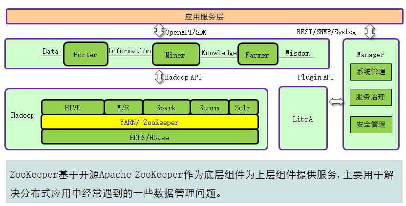

本章节主要介绍知识点有：
- ZooKeeper的作用以及在华为产品中的位置。
- ZooKeeper的服务架构以及数据模型。
- ZooKeeper的读写特性以及一致性的保证。
- ZooKeeper节点的创建以及节点权限设定。
- ZooKeeper与组件之间的关系。
简介
ZooKeeper是一个分布式、高可用性的协调服务。在华为大数据产品中主要提供两个功能：
- 帮助系统避免单点故障，建立可靠的应用程序。
- 提供分布式协作服务和维护配置信息
产品的主要位置

结构
ZooKeeper集群中的节点分为三种角色：Leader、Follower和Observer，其结构和相互关系如图1所示。通常来说，需要在集群中配置奇数个（2N+1）ZooKeeper服务，至少（N+1）个投票才能成功的执行写操作。（就是所说的容灾能力）

- ZooKeeper集群由一组Server节点组成，这一组Server节点中存在一个角色为Leader的节点，其他节点都为Follower。当客户端Client连接到ZooKeeper集群，并且执行写请求时，这些请求会被发送到Leader节点上，然后Leader节点上数据变更会同步到集群中其他的Follower节点。
- Leader节点在接收到数据变更请求后，首先将变更写入本地磁盘，以作恢复之用。当所有的写请求持久化到磁盘以后，才会将变更应用到内存中。
- ZooKeeper使用了一种自定义的原子消息协议（ZooKeeper Atomic Broadcast Zab协议），在消息层的这种原子特性，保证了整个协调系统中的节点数据或状态的一致性。Follower基于这种消息协议能够保证本地的ZooKeeper数据与Leader节点同步，然后基于本地的存储来独立地对外提供服务。
- 当一个Leader节点发生故障失效时，失败故障是快速响应的，消息层负责重新选择一个Leader，继续作为协调服务集群的中心，处理客户端写请求，并将ZooKeeper协调系统的数据变更同步（广播）到其他的Follower节点。
Leader节点在接收到数据变更请求后，先写磁盘再写内存。
日志增强
Zookeeper关键特性：
一致性：对外展示同一个视图（内容可能不一样））
实时性 ：保证实时收到服务器更新的信息（失效的或者更新的）
可靠性：一个收到，转发给所有的Server
等待无关性： 慢的或者失效的client不会干预快速的client的请求，使得每个client都能有效的等待
原子性：只有失败或者成功两种状态
顺序一致性： 客户端所发送的更新会按照它们被发送的顺序进行应用
Zookeeper读特性：
任意节点的读操作效果都一样的（同一个视图下）
Zookeeper写特性：

写请求
- Follower或Observer接收到写请求后，转发给Leader。
- Leader协调各Follower，通过投票机制决定是否接受该写请求。
- 如果超过半数以上的Leader、Follower节点返回写入成功，那么Leader提交该请求并返回成功，否则返回失败。
- Follower或Observer返回写请求处理结果。
只读请求
客户端直接向Leader、Follower或Observer读取数据
ZooKeeper客户端常用命令使用
与组件之间的关系
ZooKeeper和Streaming

注：
- Streaming利用ZooKeeper实现Nimbus的主备。其中ZooKeeper提供了2种服务：
- 分布式锁服务
- 多个Nimbus进程都会尝试去ZooKeeper创建对应的节点，该节点只能被一个Nimbus进程创建成功，创建 成功的Nimbus进程成为主Nimbus。
- 事件侦听机制—watcher
- 备Nimbus侦听对应的ZooKeeper节点。主Nimbus进程宕掉之后，该节点会被删除，那么，备Nimbus就可以收到相应的消息。
ZooKeeper和HDFS

- ZKFC（ZKFailoverController）作为一个ZooKeeper集群的客户端，用来监控NameNode的状态信息，ZKFC进程仅在部署NameNode的节点中存在。HDFS NameNode的Active和Standby节点均有ZKFC进程。
- Standby NameNode通过ZooKeeper感知Active NameNode的变化。一旦Active NameNode宕机，HDFS就会进行主备切换。
- HDFS NameNode的ZKFC连接到ZooKeeper，把主机名等信息保存到ZooKeeper中，即“/hadoop-ha”下的znode目录里。先创建znode目录的NameNode节点为主节点，另一个为备节点。HDFS NameNode Standby通过ZooKeeper定时读取NameNode信息。
- 当主节点进程异常结束时，HDFS NameNode Standby通过ZooKeeper感知“/hadoop-ha”目录下发生了变化，NameNode会进行主备切换。
- 图中，实线为写入操作，虚线为监控操作。
ZooKeeper和YARN

- 在系统启动时，ResourceManager会尝试把选举信息写入ZooKeeper，第一个成功把写入ZooKeeper的ResourceManager被选举为Active ResourceManager，另一个为Standby ResourceManager。Standby ResourceManager定时去ZooKeeper监控Active ResourceManager选举信息。
- 一旦Active ResourceManager异常结束，Yarn就会进行主备切换。
- Active ResourceManager还会在ZooKeeper中创建Statestore目录，存储Application相关信息。当Active ResourceManager产生故障时，Standby ResourceManager会从Statestore目录获取Application相关信息，恢复数据并升为Active ResourceManager。
- 图中，实线写入，虚线监控。
ZooKeeper和HBase

- ZooKeeper要存储HBase元数据、HMaster地址，同时要接受HRegionServer的注册。
- HMaster通过ZooKeeper感知各HRegionServer的健康状况，以便进行控制管理。
- HBase可以部署多对Hmaster实现HA，与HDFS HA 类似。当出现active HMaster 宕机时，HBase可立即实现主备切换。避免HBase单点故障问题。
- 多对HMaster是指启用HBase 多实例（HBase1,HBase2… …）特性。
- 图中，实线写入，虚线监控。